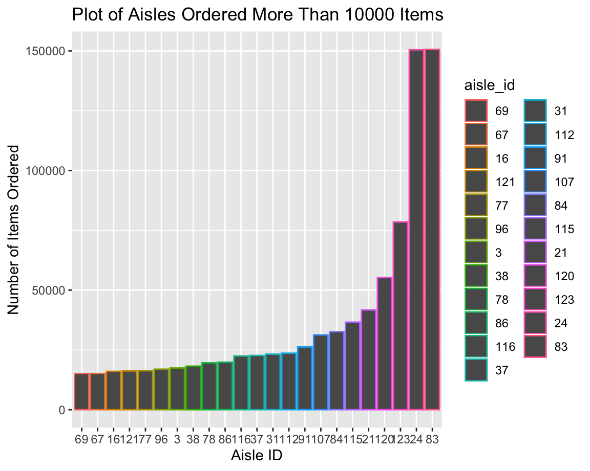
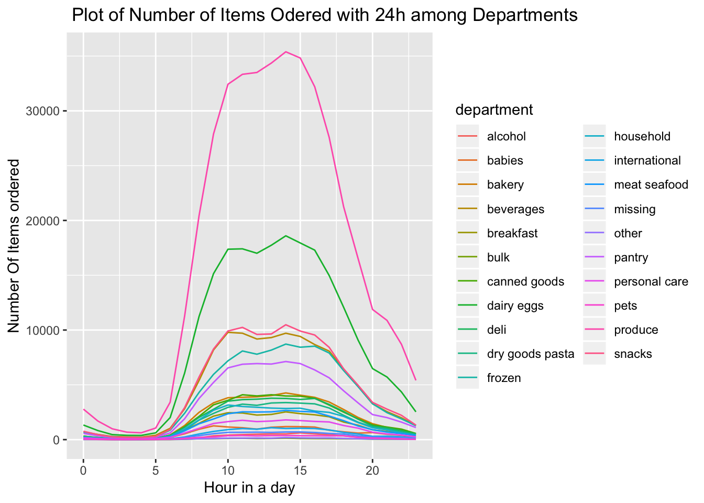

library(tidyverse)
library(viridis)
library(p8105.datasets)
library(plotly)
data("instacart")instacart %>%
select(aisle_id) %>%
count(aisle_id) %>%
mutate(
number_of_item = n
) %>%
arrange(desc(number_of_item)) %>%
filter(number_of_item > 15000) %>%
mutate(
aisle_id = factor(aisle_id),
aisle_id = forcats::fct_reorder(aisle_id, number_of_item )) %>%
ggplot(aes(x = aisle_id, y = number_of_item,color = aisle_id))+
geom_col() +
labs(
title = "Plot of Aisles Ordered More Than 10000 Items",
x = "Aisle ID",
y = "Number of Items Ordered"
) 
instacart %>%
select(department,order_hour_of_day,aisle) %>%
arrange(order_hour_of_day)%>%
group_by(department,order_hour_of_day)%>%
count(aisle)%>%
group_by(department,order_hour_of_day)%>%
summarize(number_ordered = sum(n)) %>%
ggplot(aes(x = order_hour_of_day,
y = number_ordered,color = department)) +
geom_line() +
labs(
title = " Plot of Number of Items Odered with 24h among Departments ",
x = "Hour in a day",
y = "Number Of Items ordered"
)
instacart %>%
select(department,aisle) %>%
group_by(department,aisle)%>%
count(aisle)%>%
summarize(number_ordered = sum(n)) %>%
ungroup%>%
mutate(department = fct_reorder(department, number_ordered)) %>%
plot_ly(x = ~department, y = ~number_ordered, type = "box",
colors = "Set2") %>%
layout(
title = "Boxplot of number of aisle selection among departments",
xaxis = list(title = ("Department")),
yaxis = list(title = ("Number of Items Ordered"))
)